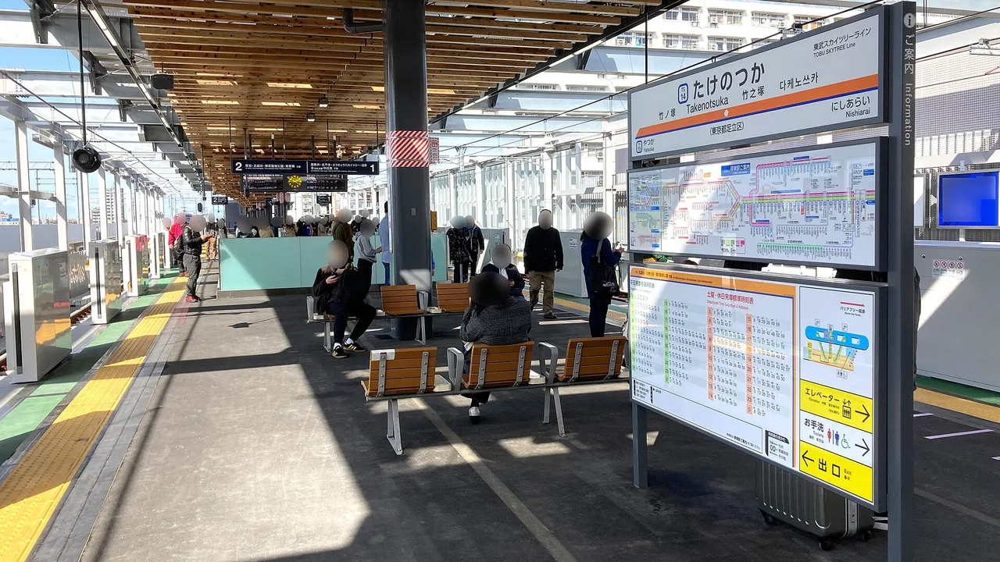

Eki stamps: ตราประทับสถานีรถไฟฟรีของญี่ปุ่น
แทบทุกสถานีรถไฟในญี่ปุ่นซ่อนของที่ระลึกฟรีชิ้นเล็กๆ ไว้: eki stamp (駅スタンプ) ของตัวเอง — ตราประทับยางหมึกที่มีภาพปราสาทท้องถิ่น มาสคอต ภูเขา หรืองานเทศกาล คุณกดมันเองได้ฟรี ลงในสมุดโน้ต แล้วค่อยๆ สะสมแผนที่ประทับตราของทุกที่ที่รถไฟพาคุณไป ปัจจุบันมีเวอร์ชันดิจิทัลด้วย — แอป EKITAG ของ JR East สะสมตราประทับเดียวกันลงโทรศัพท์ด้วยการแตะ คู่มือนี้ครอบคลุมทั้งตราประทับแบบกระดาษและดิจิทัล สถานที่หา วิธีที่ stamp rally ทำงาน และภาษาญี่ปุ่นที่คุณจะใช้ที่ประตูตรวจตั๋ว

Eki stamps คืออะไร
eki stamp (駅スタンプ, eki sutanpu — "ตราประทับสถานี") คือตราประทับยางที่ระลึกซึ่งเก็บไว้ที่สถานีรถไฟให้นักเดินทางกดเองได้ ตราประทับของแต่ละสถานีมีดีไซน์เป็นของตัวเอง: สถานที่สำคัญในท้องถิ่น มาสคอตของเมือง ดอกไม้ตามฤดูกาล หรือวิวที่มีชื่อเสียง การสะสมตราประทับเหล่านี้เป็นประเพณีการเดินทางที่มีมาหลายสิบปีในญี่ปุ่น — งานอดิเรกที่เงียบสงบและฟรี ที่เปลี่ยนการเดินทางด้วยรถไฟทุกครั้งให้กลายเป็นการตามล่าสมบัติเบาๆ ทีละสถานี
สองสิ่งที่ทำให้มันเหมาะสำหรับมือใหม่:
- ฟรี ไม่มีค่าใช้จ่ายและไม่ต้องซื้ออะไร — ตราประทับและแผ่นหมึกวางไว้ให้ทุกคนใช้
- บริการตนเอง ส่วนใหญ่ไม่ต้องมีเจ้าหน้าที่หรือขอร้องใคร: หาตราประทับ ทาหมึก แล้วกดลงในสมุดของคุณเอง
สิ่งที่คุณต้องเตรียมมาเองคือสิ่งที่จะประทับลงไป สมุดโน้ตเปล่าก็ใช้ได้ นักสะสมหลายคนใช้ สมุดตราประทับ (スタンプ帳) โดยเฉพาะ เนื่องจากแต่ละดีไซน์เป็นของเฉพาะสถานที่นั้น สมุดที่เสร็จแล้วจึงกลายเป็นบันทึกส่วนตัวของทุกที่ที่คุณเดินทางไปอย่างแท้จริง
ตราประทับกระดาษฟรี
eki stamp แบบคลาสสิกคือตราประทับยางแบบหมึกในตัวหรือมีแผ่นหมึกแยก มักวางอยู่บนขาตั้งเล็กๆ ตำแหน่งที่วางจะแตกต่างกันไปตามสถานี ดังนั้นการรู้จุดที่มักพบจึงเป็นประโยชน์
| ตำแหน่งที่มักพบ | สิ่งที่ควรตรวจสอบ |
|---|---|
| ใกล้ประตูตรวจตั๋ว (改札, kaisatsu) | มักอยู่ด้านในหรือด้านนอกประตู — หากอยู่ด้านใน คุณอาจต้องมีตั๋วที่ถูกต้องหรือแตะบัตร IC เพื่อเข้าถึง |
| ที่สำนักงานสถานี / ช่องบริการมีเจ้าหน้าที่ (駅事務室・窓口) | ตราประทับบางอันเก็บไว้ที่เคาน์เตอร์ พูดว่า "スタンプはありますか?" เพื่อขอ |
| มุมข้อมูลการท่องเที่ยว (観光案内所) | สถานีขนาดใหญ่มักวางตราประทับไว้พร้อมกับแผ่นพับและแผนที่ |
| ข้างเสาในโถงหรือโต๊ะตราประทับโดยเฉพาะ | ศูนย์กลางสำคัญ (Tokyo, Ueno ฯลฯ) อาจมีขาตั้งตราประทับที่มีป้ายบอก |
แผ่นหมึกอาจแห้งและยางอาจสึกหรอ ดังนั้นตราประทับเดียวกันอาจดูคมชัดที่สถานีหนึ่งและจางที่อีกสถานี ลองกดบนกระดาษเศษก่อน ทาหมึกให้สม่ำเสมอ แล้วกดตรงๆ ลงไปโดยไม่โยก อย่าเอาตราประทับหรือแผ่นหมึกออกจากขาตั้ง — ทิ้งไว้ให้นักเดินทางคนต่อไป
เคล็ดลับสำหรับการวางแผน: ตราประทับบางอันอยู่ ด้านใน ประตูตรวจตั๋ว ดังนั้นคุณจะเข้าถึงได้เฉพาะเมื่อถือตั๋วที่ถูกต้องหรือแตะบัตร IC แล้วเท่านั้น หากสถานีนั้นเป็นแค่จุดแวะสะสมตราประทับ ให้คำนึงถึงค่าโดยสารขั้นต่ำ หรือสะสมระหว่างที่เดินทางผ่านอยู่แล้ว
แอปตราประทับดิจิทัล (EKITAG)
ตั้งแต่ปี 2023 JR East ได้เปิดตัวแอปตราประทับสถานีดิจิทัลฟรีชื่อ EKITAG (エキタグ) แทนที่จะใช้หมึก คุณสะสมตราประทับของสถานีลงโทรศัพท์: เปิดแอปที่สถานี แตะปุ่ม Touch แล้วนำโทรศัพท์แตะที่เครื่องหมาย "touch" ของสถานี (ใช้ NFC) ตราประทับจะบันทึกลงในคอลเลกชันของคุณ และคุณสามารถวางทับบนรูปถ่ายที่ถ่ายที่นั่นได้
ไม่ได้จำกัดเฉพาะ JR East เท่านั้น ณ วันที่ 1 เมษายน 2024 EKITAG ครอบคลุมประมาณ 56 ผู้ประกอบการ 141 สาย และ 832 สถานี และยังคงขยายตัวทุกรอบเมื่อสาย JR และรถไฟเอกชนเพิ่มเติมเข้าร่วม ถือตัวเลขใดๆ เป็นข้อมูล ณ เวลานั้น และตรวจสอบในแอปว่าอะไรเปิดใช้งานอยู่ในปัจจุบัน
- ฟรี — ดาวน์โหลดสำหรับ iOS หรือ Android ค้นหา エキタグ (หรือ "EKITAG Digital Stamps") ในสโตร์
- แตะเพื่อสะสม — คุณต้องอยู่ที่สถานีจริงๆ และแตะจุดสัมผัส ไม่สามารถสะสมจากระยะไกลได้
- แคมเปญ — EKITAG จัดแคมเปญ stamp rally แบบจำกัดเวลาพร้อมตราประทับลับและของที่ระลึกเล็กๆ สำหรับผู้ที่สะสมครบชุด
- ใช้ร่วมกันได้ — สถานีอาจมีตราประทับกระดาษ ดิจิทัล หรือทั้งสองอย่าง รายการดิจิทัลมีน้อยกว่าตราประทับกระดาษทั้งหมด ดังนั้นหลายสถานียังคงเป็นแบบกระดาษเท่านั้น
EKITAG คือแอปฟรีของ JR East เอง — รายการความครอบคลุมเพิ่มขึ้นทุกรอบ ดังนั้นแทนที่จะพิมพ์จำนวนสถานีที่ล้าสมัย ให้ติดตั้งแอปแล้วให้มันแสดงว่าสถานีใกล้เคียงใดมีตราประทับดิจิทัลที่ใช้งานได้ตอนนี้
วิธีสะสม
ขั้นตอนนั้นง่ายและทำซ้ำที่ทุกสถานี เริ่มจากกระดาษก่อน แล้วตามด้วยดิจิทัล:
| ขั้นตอน | ตราประทับกระดาษ | ดิจิทัล (EKITAG) |
|---|---|---|
| 1 | เตรียมสมุดตราประทับ (スタンプ帳) หรือสมุดโน้ต | ติดตั้ง EKITAG ก่อนเดินทาง |
| 2 | หาตราประทับใกล้ประตู สำนักงาน หรือมุมข้อมูล | เปิดแอปเมื่อถึงสถานี |
| 3 | ทดสอบบนกระดาษเศษ ทาหมึกสม่ำเสมอ กดตรงๆ ลงไป | แตะ "Touch" นำโทรศัพท์แตะที่เครื่องหมาย touch ของสถานี |
| 4 | จดวันที่/ชื่อสถานีไว้ข้างๆ ถ้าต้องการ | ตราประทับบันทึกแล้ว วางทับบนรูปถ่ายได้ถ้าต้องการ |
| 5 | วางตราประทับและแผ่นหมึกไว้ที่เดิม | ตรวจสอบว่ามี rally ที่กำลังดำเนินอยู่ที่คุณเพิ่งเข้าร่วมหรือไม่ |
Eki stamps เข้ากันได้ดีกับการเดินทางปกติ — คุณผ่านประตูอยู่แล้ว ดังนั้นการสะสมตราประทับใช้เวลาเพิ่มแค่หนึ่งนาที ไม่ต้องเดินอ้อม เลือกสายรถไฟที่คุณกำลังนั่งอยู่แล้วและถือว่าทุกป้ายเป็นโอกาสสะสมตราประทับ
Stamp rally และตราประทับที่น่าสนใจ
นอกจากตราประทับสถานีถาวร รถไฟยังจัด stamp rally (スタンプラリー): แคมเปญแบบจำกัดเวลาที่การสะสมตราประทับครบชุด — มักมีธีมเกี่ยวกับวันครบรอบ ตัวละคร หรือภูมิภาค — จะได้รับรางวัลเล็กๆ หรือดีไซน์พิเศษ JR East, Tokyo Metro และรถไฟเอกชนหลายสายจัดงานเหล่านี้ และ EKITAG ก็มีเวอร์ชันดิจิทัลพร้อมตราประทับลับ
- ตราประทับสถานีถาวร — ดีไซน์ประจำวันที่แต่ละสถานีมีเจ้าหน้าที่ มีตลอดเวลา ฟรี ไม่มีกำหนดเวลา
- Rally ตามฤดูกาล / วันครบรอบ — จัดเป็นสัปดาห์หรือเดือน สะสมครบชุดได้รับป้าย การ์ด หรือของที่ระลึก
- Rally ตัวละคร — ความร่วมมือกับอนิเมะ มาสคอต หรือเกม ได้รับความนิยมและมักแออัดในวันหยุดสุดสัปดาห์
- EKITAG digital rally — ตรวจสอบแท็บแคมเปญในแอปว่ามีอะไรเปิดอยู่และจุดสัมผัสอยู่ที่ไหน
เนื่องจาก rally มาและไป อย่าวางแผนทั้งวันรอบ rally โดยไม่ยืนยันวันที่ก่อน — ตราประทับถาวรนั้นรอคุณอยู่เสมอ
ลิงก์บางส่วนด้านบนเป็นลิงก์พันธมิตร เราอาจได้รับค่าคอมมิชชันโดยไม่มีค่าใช้จ่ายเพิ่มเติมสำหรับคุณ เราแสดงเฉพาะบริการที่เราจะใช้เองเท่านั้น
ภาษาญี่ปุ่นที่คุณจะใช้จริงๆ
eki stamp ส่วนใหญ่เป็นแบบบริการตนเอง แต่คำพูดที่แม่นยำสองสามคำช่วยได้เมื่อตราประทับอยู่ที่เคาน์เตอร์ หรือเมื่อคุณต้องถามว่ามันอยู่ที่ไหน
| ภาษาญี่ปุ่น | การอ่าน | ความหมาย |
|---|---|---|
| 駅スタンプ | eki sutanpu | ตราประทับสถานี — ตัวของที่สะสม |
| スタンプ帳 | sutanpu-chō | สมุดตราประทับ — สิ่งที่คุณกดตราประทับลงไป |
| スタンプはどこですか? | sutanpu wa doko desu ka? | ตราประทับอยู่ที่ไหน? |
| 改札 | kaisatsu | ประตูตรวจตั๋ว — จุดที่มักพบตราประทับ |
| 押す | osu | กด / ประทับ |
| 無料 | muryō | ฟรี ไม่มีค่าใช้จ่าย |
| 記念 | kinen | ที่ระลึก — เช่น "ตราประทับที่ระลึก" |
| スタンプラリー | sutanpu rarī | stamp rally — แคมเปญสะสมแบบจำกัดเวลา |
อยากให้จำได้ขึ้นใจ? แบบทดสอบ JLPT ฟรี ฝึกคำศัพท์การเดินทางและวัฒนธรรมแบบนี้ด้วยการทบทวนแบบเว้นระยะ
ตราประทับสถานีเชื่อมต่อได้ดีกับเกมสะสมตามสถานที่อื่นๆ ของญี่ปุ่น: ตราประทับ michi-no-eki สถานีริมทาง →, manhole cards →, ฝาท่อ Pokéfuta → และ ตราประทับ goshuin ศาลเจ้าและวัด → นักเดินทางหลายคนสะสมหลายอย่างในสายรถไฟเดียว
คำถามที่พบบ่อย
ถาม: Eki stamps ฟรีไหม?
ตอบ: ใช่ ตราประทับสถานีฟรี ไม่มีค่าใช้จ่ายและไม่ต้องซื้ออะไร คุณเตรียมสมุดโน้ตหรือสมุดตราประทับมาเองและกดตราประทับเอง แอปดิจิทัล EKITAG ก็ดาวน์โหลดฟรีเช่นกัน
ถาม: ตราประทับอยู่ที่ไหนในสถานี?
ตอบ: มักอยู่ใกล้ประตูตรวจตั๋ว ที่ช่องบริการมีเจ้าหน้าที่หรือสำนักงานสถานี หรือในมุมข้อมูลการท่องเที่ยว ที่ศูนย์กลางสำคัญอาจมีโต๊ะตราประทับโดยเฉพาะ หากหาไม่เจอ ถามเจ้าหน้าที่ว่า "スタンプはどこですか?"
ถาม: ต้องมีตั๋วเพื่อเข้าถึงตราประทับไหม?
ตอบ: บางครั้ง หากตราประทับอยู่ด้านในประตูตรวจตั๋ว คุณจะเข้าถึงได้เฉพาะเมื่อมีตั๋วที่ถูกต้องหรือแตะบัตร IC แล้วเท่านั้น ตราประทับที่อยู่นอกประตูสามารถเข้าถึงได้อย่างอิสระ
ถาม: EKITAG คืออะไร?
ตอบ: EKITAG (エキタグ) คือแอปตราประทับสถานีดิจิทัลฟรีของ JR East เปิดตัวในปี 2023 คุณสะสมตราประทับของสถานีโดยนำโทรศัพท์แตะที่จุดสัมผัสในสถานีโดยใช้ NFC ณ เดือนเมษายน 2024 ครอบคลุมประมาณ 56 ผู้ประกอบการ 141 สาย และ 832 สถานี และยังคงขยายตัวต่อเนื่อง
ถาม: ต้องใช้กระดาษพิเศษสำหรับตราประทับไหม?
ตอบ: ไม่ สมุดโน้ตเปล่าใดก็ใช้ได้ นักสะสมหลายคนใช้สมุดตราประทับโดยเฉพาะ (スタンプ帳) และบางสถานีขายแบบมีธีม แต่กระดาษธรรมดาก็ใช้ได้
ถาม: stamp rally คืออะไร?
ตอบ: stamp rally (スタンプラリー) คือแคมเปญแบบจำกัดเวลาที่การสะสมตราประทับครบชุดจะได้รับรางวัลหรือดีไซน์พิเศษ รถไฟจัดงานเหล่านี้สำหรับวันครบรอบและตัวละคร และ EKITAG ก็มีเวอร์ชันดิจิทัล ตรวจสอบวันที่ของแคมเปญเสมอก่อนวางแผนรอบมัน